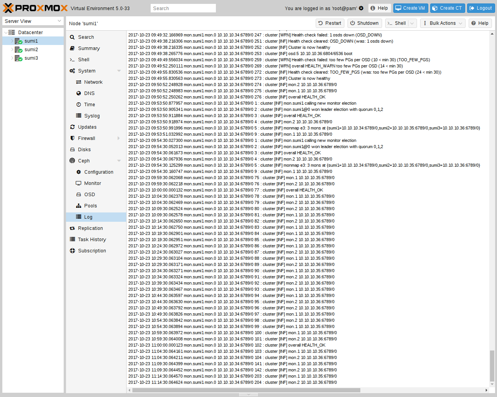

Following the setup from the previous sections, you can configure Proxmox VE to use
such pools to store VM and Container images. Simply use the GUI to add a new
RBD storage (see section
Ceph RADOS Block Devices (RBD)).
You also need to copy the keyring to a predefined location for an external Ceph cluster. If Ceph is installed on the Proxmox nodes itself, then this will be done automatically.
The filename needs to be <storage_id> + `.keyring, where <storage_id> is
the expression after rbd: in /etc/pve/storage.cfg. In the following example,
my-ceph-storage is the <storage_id>:
mkdir /etc/pve/priv/ceph cp /etc/ceph/ceph.client.admin.keyring /etc/pve/priv/ceph/my-ceph-storage.keyring